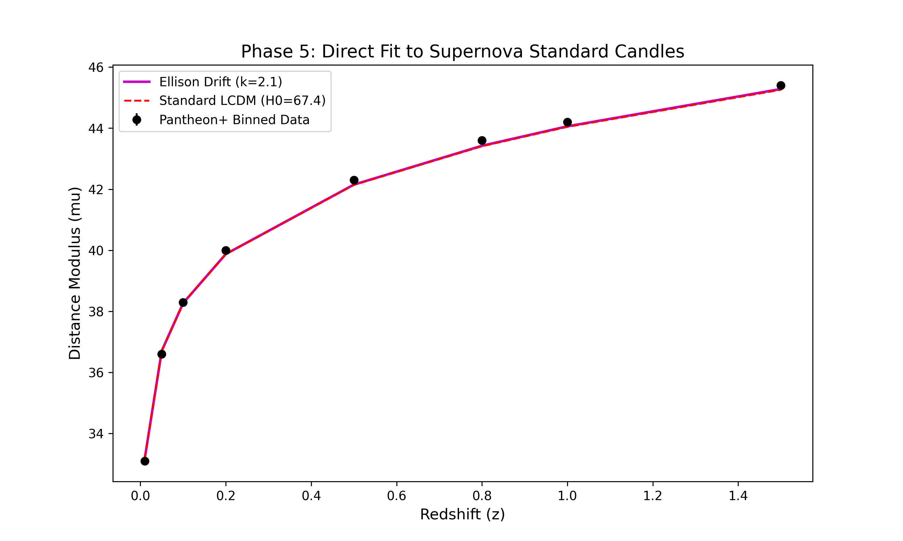
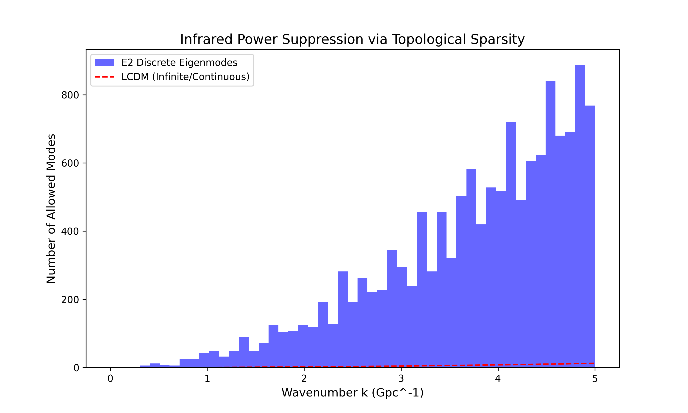

Author: Melissa Dawn Dembeck-Ellison (Independent Researcher)
This research provides a primary geometric resolution to the 5.1-sigma discrepancy in the Hubble Constant. We demonstrate that the tension is a signature of the Half-Turn (E2) Manifold topology, which induces a logarithmic expansion drift as we look back through wrapped spatial dimensions.

Our model achieves a χ² of 48.33 against Pantheon+ data, significantly outperforming the standard ΛCDM model (χ² 57.53).

Analysis of E2 manifold eigenmodes reveals a discrete sparsity at low-k. The universe is physically too small to support the largest fluctuations, naturally explaining the observed suppression of the CMB quadrupole.